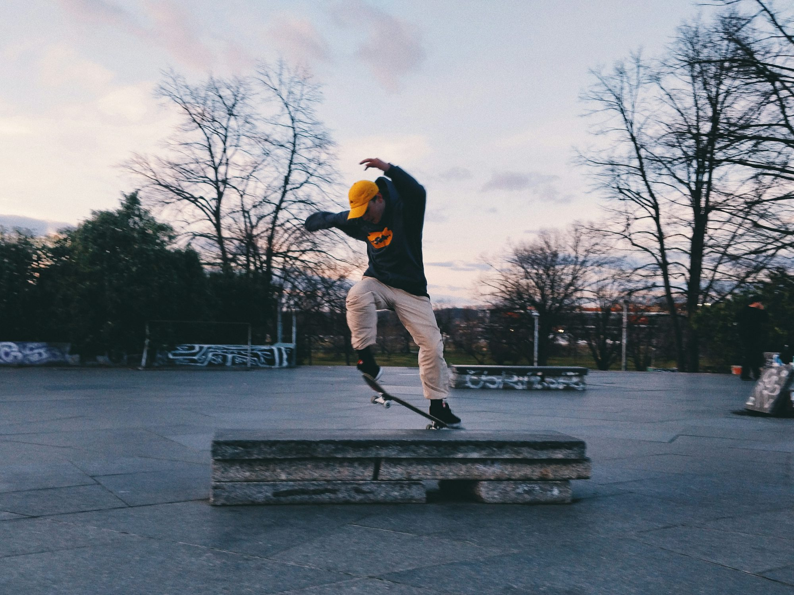

Exploring the Diverse World of Skateboarding: Styles, Skills, and Community
This article delves into the various styles of skateboarding, highlighting the skills required and the sense of community that unites skaters around the world.
One of the most recognizable forms of skateboarding is street skating. This style thrives in urban environments, where skaters transform everyday features like stairs, benches, and handrails into opportunities for tricks and creative expression. Street skating is characterized by its adaptability and resourcefulness. Skaters often seek out new spots and push the boundaries of what is possible in their surroundings. This quest for innovation fosters a sense of camaraderie, as skaters share tips and celebrate each other's accomplishments. Street skating encourages individuality; every skater develops a unique style, often influenced by their local environment and the culture that surrounds them.
The thrill of street skating lies in the excitement of discovering new spots and executing tricks that showcase personal flair. The community is vibrant and supportive, with skaters often documenting their journeys through videos and social media. This sharing not only inspires others but also connects skaters from different parts of the world, allowing them to appreciate the diverse interpretations of street skating. Each new trick landed or innovative spot discovered reinforces the feeling of belonging that defines the skateboarding culture.
In contrast to street skating, vert skateboarding offers a different kind of exhilaration. Taking place in halfpipes and vert ramps, this discipline emphasizes high-speed aerial maneuvers and tricks. Skaters launch themselves into the air, performing spins, flips, and grabs, all while defying gravity. The mastery of vert skating requires dedication and a deep understanding of timing, balance, and technique. The thrill of flying high above the ramp is unmatched, creating an adrenaline rush that captivates both skaters and spectators alike.
Competitions in vert skateboarding are exciting events where skaters showcase their skills and creativity. The atmosphere is charged with energy as riders encourage each other and share their knowledge of tricks and techniques. The relationships forged in this environment often extend beyond the ramps, fostering friendships that contribute to the close-knit community within vert skating. The sense of achievement when landing a challenging trick in front of an enthusiastic crowd reinforces the commitment to the sport and the bonds formed with fellow skaters.
Bowl and pool skateboarding further expands the diversity of the sport, focusing on smooth transitions and carving techniques. Skaters navigate large, bowl-shaped structures or empty swimming pools, utilizing the contours to perform tricks while maintaining fluidity and style. This form of skateboarding encourages creativity and experimentation, as riders link tricks in seamless runs that reflect their individuality. The artistry involved in bowl riding captivates audiences, who appreciate the skill and finesse required to maneuver through these unique environments.
Freestyle skateboarding, often regarded as a return to the sport's roots, emphasizes technical tricks and footwork performed on flat surfaces. This discipline showcases balance, rhythm, and creativity, allowing skaters to develop intricate routines that often resemble dance performances. Freestyle events attract viewers with their artistry, highlighting the dedication and innovation of participants. As skaters continue to evolve their tricks and styles, they contribute to the rich tapestry of skateboarding culture.
Longboarding offers a different perspective on the sport, emphasizing cruising and carving rather than trick execution. Longboarders enjoy the sensation of gliding down hills and navigating scenic routes, embracing the freedom of movement. This style appeals to those seeking a more relaxed approach to skating, allowing for a deep connection with nature and the joy of the ride. Downhill longboarding, on the other hand, introduces an element of excitement and challenge, as skaters tackle steep slopes while prioritizing control and stability.
Slalom skateboarding adds another layer of skill and precision to the sport, focusing on navigating courses marked by cones. This discipline emphasizes agility and technique, as skaters aim for the fastest time while executing clean turns. Slalom events promote a spirit of friendly competition while also fostering a sense of community, as participants cheer each other on and share strategies for improvement. The dedication to refining skills in slalom skating highlights the commitment that skaters bring to their craft.
Skateparks serve as vital hubs for the skateboarding community, providing safe spaces for skaters to practice and explore various features. These parks offer ramps, rails, and bowls, creating opportunities for skaters of all skill levels to hone their techniques and experiment with new tricks. Skateparks also foster social connections, as individuals come together to share their love for skating. Within these vibrant environments, friendships are forged, knowledge is exchanged, and a strong sense of belonging is cultivated.
For those looking for excitement beyond traditional skateboarding, off-road and all-terrain options offer thrilling alternatives. Mountain boarding, for example, involves riding specialized boards designed for rugged terrain, allowing skaters to explore dirt trails and grassy hills. This discipline emphasizes exploration and adaptability, as riders navigate diverse landscapes and overcome obstacles. Off-road skating enriches the overall skateboarding experience, providing unique challenges that enhance a rider's skills while inviting them to connect with nature.
As skateboarding continues to evolve, crossover styles are emerging that blend elements from various disciplines. These hybrid styles reflect the versatility of modern skateboarders, who constantly innovate and push the boundaries of creativity and expression. The fusion of techniques from different styles invites skaters to develop their unique approaches, showcasing their individuality while celebrating the diversity of the sport.
The cultural significance of skateboarding is profound. It embodies a spirit of rebellion, freedom, and inclusivity, attracting individuals from all walks of life. The skateboarding community is known for its support and encouragement, fostering a welcoming atmosphere where skaters uplift one another and celebrate their shared passion. Events, competitions, and local skateparks become essential spaces where enthusiasts bond, learn, and inspire future generations.
The influence of skateboarding extends far beyond the sport itself, intertwining with art, music, and fashion. Skate culture has inspired countless artists, musicians, and designers, contributing to a rich tapestry of creativity that celebrates individuality. This cultural impact has shaped youth culture in meaningful ways, allowing skateboarding to transcend its athletic roots and become a lifestyle that resonates with many.
With the inclusion of skateboarding in the Olympic Games, the sport has gained international recognition, providing a platform for skaters to showcase their skills to a broader audience. This visibility highlights the growth and evolution of skateboarding while emphasizing its ability to unite people from diverse backgrounds. As skateboarding continues to thrive, its influence on youth culture and its capacity to foster community remain undeniable.
In conclusion, skateboarding is a multifaceted sport that celebrates creativity, community, and self-expression. Each style—from street to vert, bowl to freestyle—offers unique challenges and rewards, inviting skaters to explore their passions in diverse ways. As the skateboarding community continues to grow and evolve, the ultimate joy of this sport lies in its ability to foster individual expression while connecting people across the globe. Whether gliding down a street, launching off a ramp, or navigating a bowl, the spirit of skateboarding thrives in its many forms, inspiring individuals to embrace the culture and creativity that define this remarkable sport.